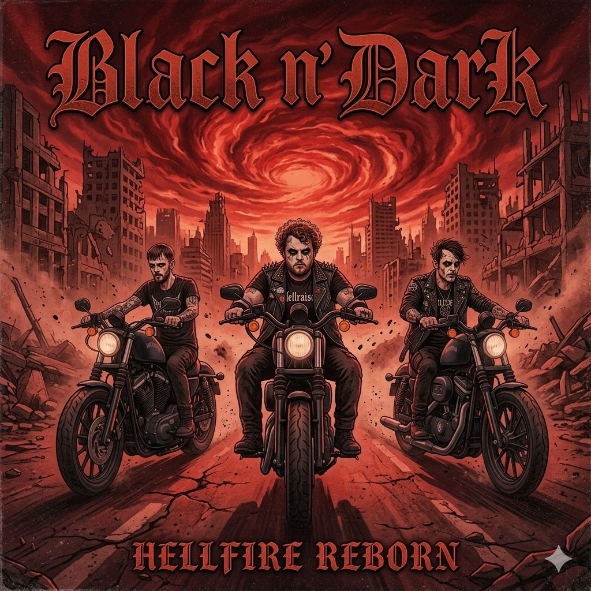

"Hellfire Reborn" é o aguardado álbum de retorno da banda Black N' Dark, lançado em 2025. Este álbum marca um novo capítulo na carreira da banda, trazendo uma mistura de elementos clássicos do heavy metal com influências modernas, resultando em um som poderoso e cativante. Com letras sombrias e riffs intensos, "Hellfire Reborn" é uma celebração do legado da banda, ao mesmo tempo em que apresenta uma evolução sonora que promete conquistar tanto os fãs antigos quanto os novos.